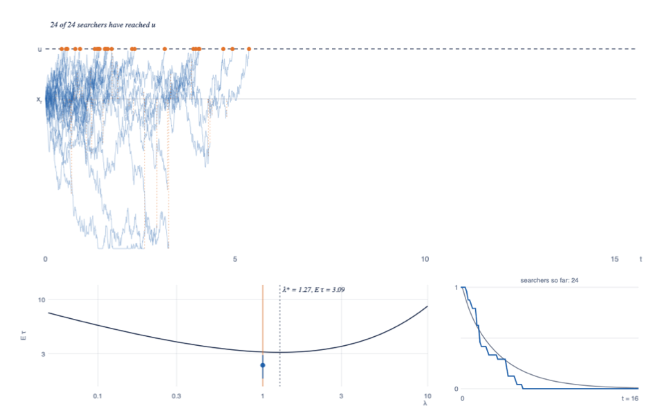
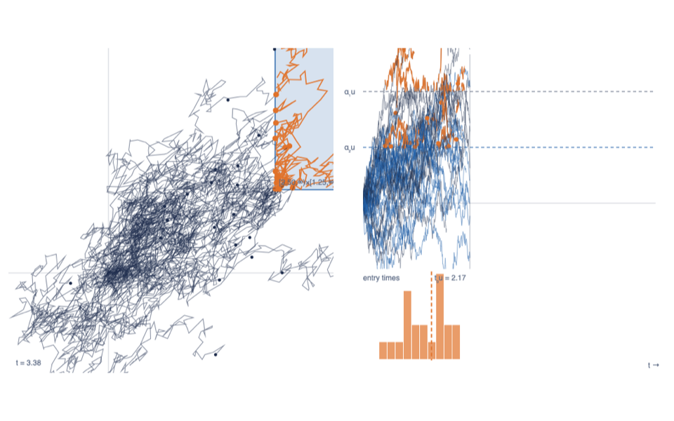
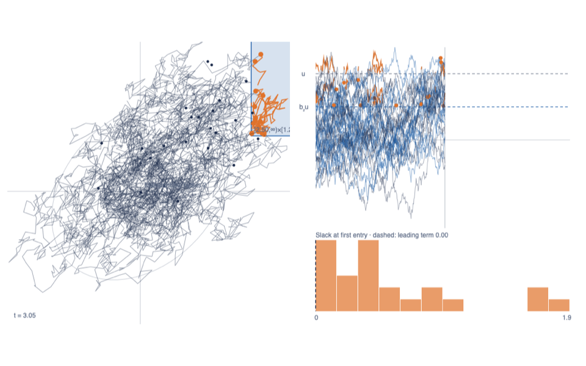
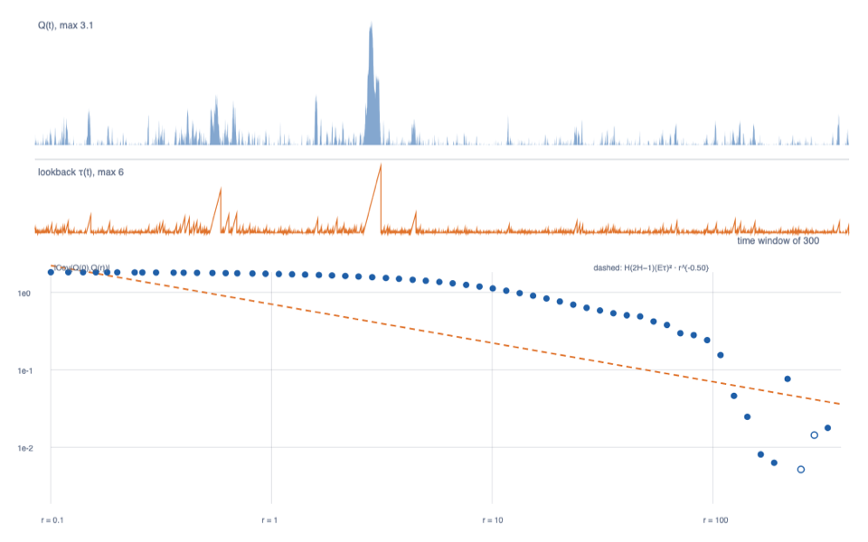
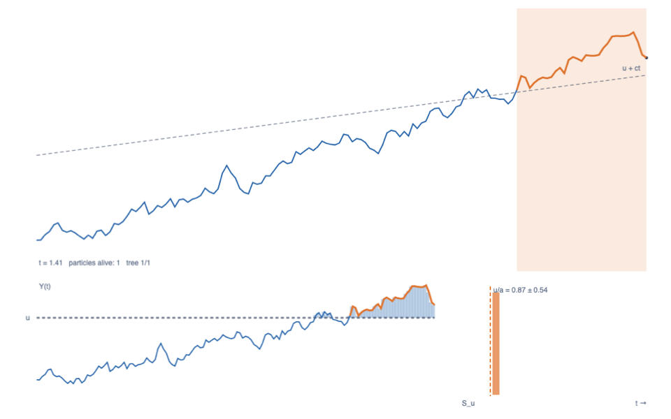
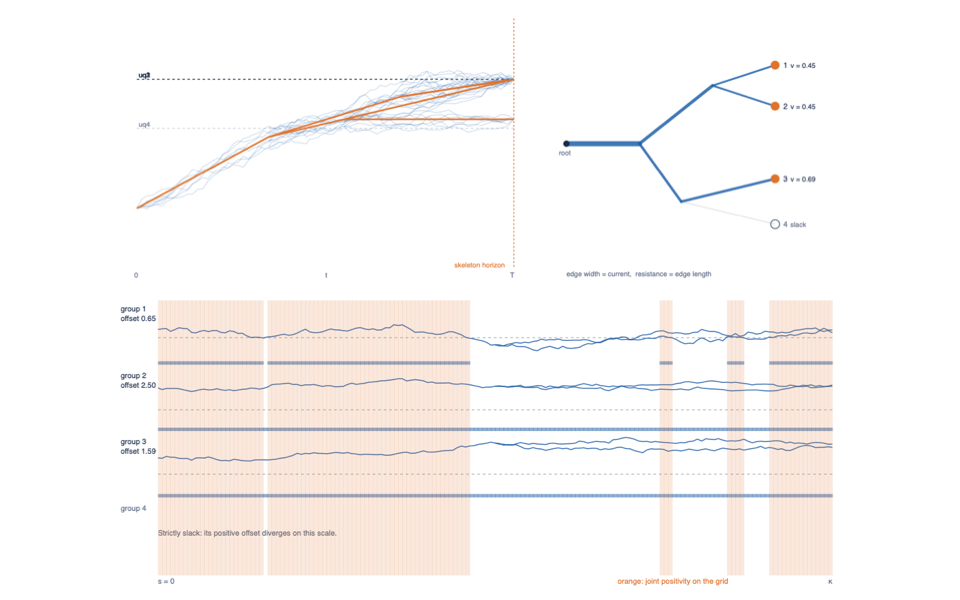
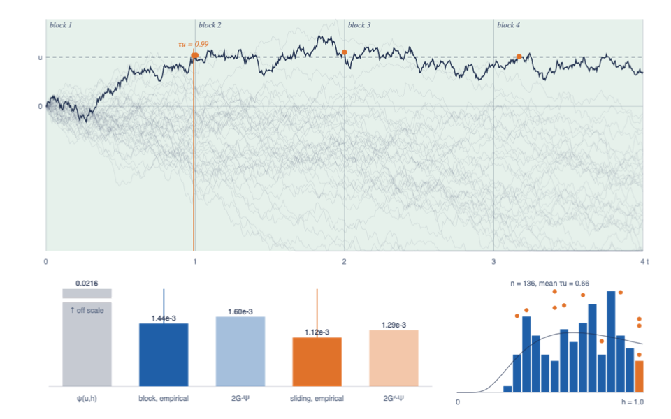

Back to square one
Follow a drifting Brownian path between Poisson reset times. A reset can jump across the target. Compare first passage with the mean search time, and explore the asymmetric Laplace stationary law. From Dębicki, Hashorva & Michna.
Open →

Hitting a quadrant
Watch correlated Brownian paths with drift reach two barriers. Vary the correlation through its critical value to see how the most likely entry moves between the corner and an edge. Paths and hits are observed on a finite time grid. From Dębicki, Hashorva, Ji & Rolski.
Open →

Simultaneous exceedance, stationary case
For a bivariate stationary Ornstein–Uhlenbeck process, compare the first detected entry times with their high-level uniform limit. Vary the correlation to see when the second barrier still affects entry. From Dębicki, Hashorva & Wang.
Open →

How long does a Gaussian queue remember?
Compare simulated workload covariances with their predicted decay as the lag increases. At H = ½ the exact finite-lag Brownian covariance provides a benchmark. From Dębicki, Hashorva & Novikov.
Open →

Parisian ruin of branching Brownian motion
Follow the minimum position across the living particles in a branching Brownian tree. The simulation checks a Parisian window at sampled times, and the paper also treats continuous observation. From Hashorva, Popivoda, Novikov & Shashkov.
Open →

Ruin on a Brownian metric tree
Follow the leaf barriers and the currents in a Brownian metric tree. A binding barrier can carry zero current. The presets show how to distinguish that case from a strictly slack leaf. From Hashorva.
Open →

Ruin in every block, ruin in every window
Compare crossing a level in each reporting block with crossing it in every sliding window. Brownian-bridge sampling detects within-block crossings; the sliding-window panel reports lower and upper bounds. From Dębicki, Hashorva & Michna.
Open →